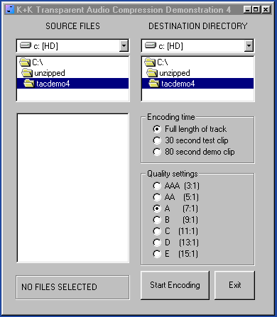
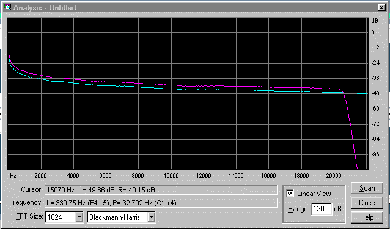
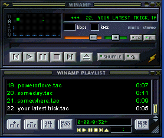

|
K+K TAC (Transparent Audio Compression) |
What does K+K Research do?
Music files are typically very large and do not compress very well with standard compressors such as PKZIP.
Special programs that can perfectly compress music files losslessly have been developed, but they typically only compress to one half of the original
file size.
To achieve greater compression ratios, it is necessary to discard some of the information in the music. When this
information is discarded, the result is called lossy compression.There are several lossy compression schemes available which are
quite good. When played on a typical computer sound system, they can sound almost as good as the original source files.
K+K Research is devoted to creating audio compression formats which give true high fidelity reproduction. This level of
performance is not required by most people. To appreciate the improvement TAC provides over other formats, you will
need a high quality sound card in your computer and good loudspeakers or connection to a fine stereo system.
K+K Research Releases Music Publisher 02 |
Music Publisher 02 is a software package for compressing music utilizing K+K TAC audio compression technology.
Music Publisher 02 can produce audio tracks with total transparency (audibly lossless) in bitrates of 140 to 180 kbps
(depending on the complexity of the material). In lower bitrates / quality settings TAC can give better audio quality
than other compression techniques (including AAC).
The MP02 package consists of a high-quality TAC encoder ,
a frontend for the encoder with batch-encoding,
and an TAC plug-in for Winamp , a versatile multiformat player (shareware).
Typical applications are; music publishing
(in a compressed format for faster download and smaller storage space), transfer of music between studio and radio
stations or similar.
MP02 uses our proprietary Active Pre Echo Cancellation (APEC) to avoid the annoying pre-echoes often found in
other audio compression formats (WMA, VQF,....).
TAC encoding is reasonably fast , on a P2-300 encoding time is app. 60% of track time.
You can download a couple of sample tracks + the Winamp plugin and hear TAC audio and soon you can download the TAC demo
program and do some more extensive comparisons.
LATEST NEWS:
New MP02 TAC Encoder
Since the release of TAC Demo-4 we have worked to achieve even better audio quality. Specially in lo-level compression and
noise handling and also in very transient material quality could be taken further still.
Now we are ready to let you hear what we have achieved.
You can download latest TAC-demo (TAC demo 5) so you can make your own comparisons, freq. tests.....
K+K releases MP02 final version
of the MP02 TAC encoder package, order your copy of MP02 now ($59.95 for a private version).
To order MP02 TAC Encoder package, please contact email adress below.
Design competition
We think we are pretty good at what we do (audio compression software) and we are sure many of you are better designers so now we launch
a small design competition; design a great looking webpage for us and win a full MP02/TAC encoder package.
Second part of this competition; design a great looking TAC frontend and win a full MP02/TAC package.
You can read more here ; TAC competition
TAC Licensing
TAC audio compression is available on a licensing basis for other software developers.
Please contact us for more information and some initial licensing agreement terms.
TAC Messageboard
Visit the K+K Reserach messageboard for discussing TAC and other audio compression issues, follow this link for
the board:
K+K MESSAGEBOARD
TAC Demo Package (V 05)
Click on images below to see a larger picture.
|
|
MP02 Frontend |
MP02 freq. response
|
Winamp player |
|
|
MP 02 FEATURES
|
CD Quality / Total transparency |
|
Internet Music Distribution |
|
Studio to Radio transfer |
|
Compression of the Future |
|
Better than ISO AAC
Compression ratios from 1:3 to 1:15 |
|
Very near lossless audio compression |
|
|
|
{kind=link}
{kind=link}
{kind=link}